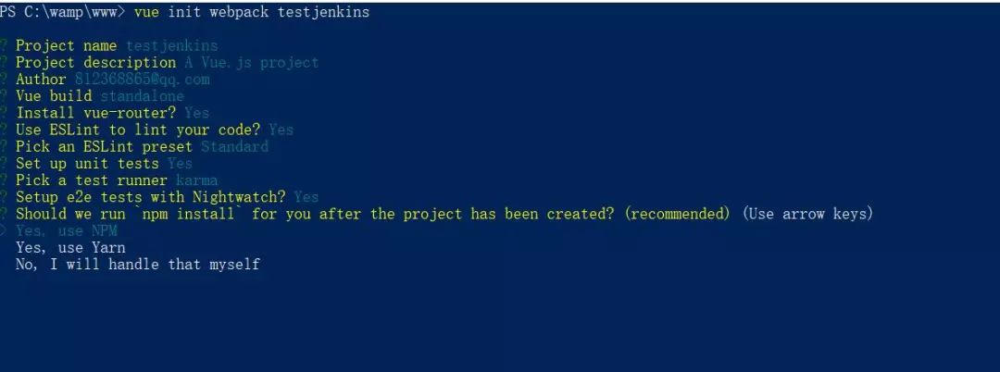

【第1262期】Jenkins打造强大的前端自动化工作流
前言
这个工作流在你们公司是前端搞的还是运维统一处理的呢？可能你在公司用惯了它但它是怎么玩的可能还不一定会知道。今日早读文章由@kiddddd分享。
本文由@钱育辉推荐。
背景
公司的前端构建及部署工作都是人工去做，随着业务扩大，项目迭代速度变快，人员增多，各种问题都暴露出来，本文是对前端自动化工作流进行探索后的一篇经验分享，将通过一个简单案例分享一下基于Jenkins的前端自动化工作流搭建的过程，搭建完这套工作流，我们只需要在本地发起一个git提交，剩下的单元测试，打包构建，代码部署，邮件提醒等功能全部自动化完成，让持续集成、持续交付、持续部署变得简单易操作，真正解决人工构建部署的诸多问题。
Jenkins是什么？
Jenkins 是一款业界流行的开源持续集成工具，广泛用于项目开发，具有自动化构建、测试和部署等功能。
本案例要实现的功能
本地项目发起一个git提交，剩下的单元测试，打包构建，代码部署，邮件提醒等全部自动化完成。
开始
准备工作
先准备一个项目，我这里直接使用vue-cli脚手架生成了一个项目，其他技术栈也一样，只要是个项目就行。


建立这个项目的远端git仓库，并把本地代码提交上去。我这里用的码云，github也一致。
准备一台能外网访问的服务器，非要用你自己的电脑当服务器也可以，保证外网可访问即可。我这里用的是阿里云ubantu14.04，另外，阿里云新手注册有一个月的免费服务器可领，不想花钱的可以试一下。
服务器上配好Java环境。
Jenkins的安装与启动
linux下：ubuntu 14.04中安装Jenkins
windows下：
从Jenkins官网下载最新war文件。
运行
java -jar jenkins.war即可。
Jenkins初始化
jenkins的默认端口是8080,启动成功后在浏览器打开。
进入后会让我们输管理员密码，打开网页上提示路径下的文件，复制密码粘贴输入即可。
然后会让安装需要的插件，此处选默认即可，等待安装完成。
创建一个管理员账户。
上面都完成后会看到这个界面。

创建任务
点击创建一个新任务

选择自由风格的软件项目，并起一个名字

至此，基础准备工作已经完成，我们在服务器上安装了Jenkins并启动，然后进行了初始化配置，建立了一个新任务。接下来我们开始配置我们需要的功能。
实现git钩子功能
首先我们要实现一个git钩子功能，就是我们向github/码云等远程仓库push我们的代码时，jenkins能知道我们提交了代码，这是自动构建自动部署的前提，钩子的实现原理是在远端仓库上配置一个Jenkins服务器的接口地址，当本地向远端仓库发起push时，远端仓库会向配置的Jenkins服务器的接口地址发起一个带参数的请求，jenkins收到后开始工作。
打开刚创建的任务，选择配置，添加远程仓库地址，配置登录名及密码及分支。

安装Generic Webhook Trigger Plugin插件（系统管理-插件管理-搜索Generic Webhook Trigger Plugin）如果可选插件列表为空，点击高级标签页，替换升级站点的URL为：http://mirror.xmission.com/jenkins/updates/update-center.json并且点击提交和立即获取。
添加触发器
第2步安装的触发器插件功能很强大，可以根据不同的触发参数触发不同的构建操作，比如我向远程仓库提交的是master分支的代码，就执行代码部署工作，我向远程仓库提交的是某个feature分支，就执行单元测试，单元测试通过后合并至dev分支。灵活性很高，可以自定义配置适合自己公司的方案，这里方便演示我们不做任何条件判断，只要有提交就触发。在任务配置里勾选Generic Webhook Trigger即可

仓库配置钩子
此处以码云为例，因为公司用的是码云，github的配置基本一致，进入码云项目主页后，点击管理-webhooks-添加，会跳出一个这样的框来。

URL格式为 http://<User ID>:<API Token>@<Jenkins IP地址>:端口/generic-webhook-trigger/invoke
userid和api token在jenkins的系统管理-管理用户-admin-设置里，这是我的

Jenkins IP地址和端口是你部署jenkins服务器的ip地址，端口号没改过的话就是8080。
密码填你和上面userid对应的密码，我这里是root。
下面的几个选项是你在仓库执行什么操作的时候触发钩子，这里默认用push。
点击提交完成配置。
测试钩子

点击测试，如果配置是成功的，你的Jenkins左侧栏构建执行状态里将会出现一个任务。

另外，你也可以试下本地提交代码，提交代码后，jenkins也会开始一个任务,目前我们没有配置任务开始后让它做什么，所以默认它只会在你提交新代码后，将新代码拉取到jenkins服务器上。到此为止，git钩子我们配置完成。
gif效果图：
实现自动化构建
git push触发钩子后，jenkins就要开始工作了，自动化的构建任务可以有很多种，比如说安装升级依赖包，单元测试，e2e测试，压缩静态资源，批量重命名等等，无论是npm script还是webpack，gulp之类的工作流，你之前在本地能做的，在这里同样可以做。
作为演示，这里只演示三个基本常用的工作流程，安装依赖包->单元测试->打包，也就是下面这三个命令。
npm install
npm run test npm run build首先，和本地运行npm script一样，我们要想在jenkins里面执行npm命令，先要在jenkins里面配置node的环境，可以通过配置环境变量的方式引入node，也可以通过安装插件的方式，这里使用了插件的方式，安装一下nvm wrapper这个插件。
打开刚刚的jenkins任务，点击配置里面的构建环境，勾选这个，并指定一个node版本。

点击构建，把要执行的命令输进去，多个命令使用&&分开。

保存。
此时本地修改一下代码push测试一下（也可以点击立即构建测试），点击本次触发的那个任务，选择控制台输出，将会看到Jenkins在云端执行的过程。

命令行最后一行是Finished状态的如果是SUCCESS（蓝色）则证明执行的任务都顺利进行，是FAILURE（红色）则证明中间有重大错误导致任务失败，UNSTABLE（黄色）代表有虽然有些小问题，但不阻碍任务进行，黄色或者红色可以去命令行看下错误输出，看下哪里出了问题。

如果上一步是SUCCESS，点击项目的工作空间，将会发现多了dist和node_modules两个文件夹。

至此，我们已经搭建了一个简易的构建工作流程，构建完成了，我们需要自动化部署。
实现自动化部署
自动化部署可能是我们最需要的功能了，公司就一台服务器，我们可以使用人工部署的方式，但是如果公司有100台服务器呢，人工部署就有些吃力了，而且一旦线上出了问题，回滚也很麻烦。所以这一节实现一下自动部署的功能。
首先，先在Jenkins上装一个插件Publish Over SSH，我们将通过这个工具实现服务器部署功能。
在要部署代码的服务器上创建一个文件夹用于接收Jenkins传过来的代码，我在服务器上建了一个testjenkins的文件夹。
Jenkins想要往服务器上部署代码必须登录服务器才可以，这里有两种登录验证方式，一种是ssh验证，一种是密码验证，就像你自己登录你的服务器，你可以使用ssh免密登录，也可以每次输密码登录，系统管理-系统设置里找到Publish over SSH这一项。
重点参数说明：Passphrase：密码（key的密码，没设置就是空）
Path to key：key文件（私钥）的路径
Key：将私钥复制到这个框中(path to key和key写一个即可)
SSH Servers的配置：
SSH ServerName：标识的名字（随便你取什么）
Hostname：需要连接ssh的主机名或ip地址（建议ip）
Username：用户名
RemoteDirectory：远程目录（上面第二步建的testjenkins文件夹的路径）
高级配置：
Use password authentication,oruse a different key：勾选这个可以使用密码登录，不想配ssh的可以用这个先试试
Passphrase/Password：密码登录模式的密码
Port：端口（默认22）
Timeout(ms)：超时时间（毫秒）默认300000
配置完成后，点击Test Configuration测试一下是否可以连接上，如果成功会返回success，失败会返回报错信息，根据报错信息改正即可。

接下来进入我们创建的任务，点击构建，增加2行代码，意思是将dist里面的东西打包成一个文件，因为我们要传输。
cd dist&&
tar -zcvf dist.tar.gz *
点击构建后操作，增加构建后操作步骤，选择send build artificial over SSH，
参数说明：
Name:选择一个你配好的ssh服务器
Source files ：写你要传输的文件路径
Remove prefix ：要去掉的前缀，不写远程服务器的目录结构将和Source files写的一致
Remote directory ：写你要部署在远程服务器的那个目录地址下，不写就是SSH Servers配置里默认远程目录
Exec command ：传输完了要执行的命令，我这里执行了解压缩和解压缩完成后删除压缩包2个命令

现在当我们在本地将Welcome to Your Vue.js App修改为Jenkins后发出一个git push，过一会就会发现我们的服务器上已经部署好了最新的代码，是不是很6。

至此，我们的自动化部署也完成了，但是如果过程中有异常怎么办，或是我们想知道每次Jenkins运行的日志及运行结果，我们可以通过配置邮件服务来让Jenkins每次完成任务后通知相关人员。
实现邮件提醒
这里我们不用E-mail Notification，因为它的邮件服务功能太少，无法自定义邮件内容及自定义触发钩子，而且只能在异常情况下才能发邮件。我们使用Editable Email Notification这个。
打开系统管理-系统配置-Extended E-mail Notification，不是系统管理-系统配置-邮件通知，千万不要配错了，否则不起作用。配置一下用来发邮件的邮箱，我这里用的是我自己的qq邮箱。

要是用别的厂家的邮箱服务就查下别的邮箱厂家smtp怎么配，用qq邮箱的除了user Name和password其他的和我写一样就行。另外password写的不是qq邮箱的密码，而是开启smtp服务后发短信获取的密码。
打开创建的那个任务，增加构建后操作步骤选择Editable Email Notification，Project Recipient List那里写你要发给谁邮件，可以多个，用分号隔开。

然后点击Advanced Settings-Triggers-Add Trigger，选择always，意思是无论什么情况任务执行完就发邮件，也可以选择其他模式，如任务执行异常了才发邮件。

我这里配置的接收邮件的地址也是我的qq邮箱，这个可以根据自己公司的工作流程配。
现在当我们在本地修改代码后发出一个git push，Jenkins自动构建部署完成后就会给我发一封邮件，邮件附件里会有本次任务的日志。

至此，我们的邮件提醒功能也配置完了。
最后
通过上面这个案例，我们搭建了一套简单的自动化工作流，只需要在本地发起一个git提交，就可以在云端自动化构建，自动化部署，部署完成或出现异常后自动邮件通知，让持续集成、持续交付、持续部署变得简单易操作，解放了人力构建部署的生产力，也统一了构建环境，真实线上的CI服务配置比这个要复杂，大体流程可以参考下阮一峰老师的这篇文章:
持续集成是什么？：http://www.ruanyifeng.com/blog/2015/09/continuous-integration.html
Jenkins还有很多强大的特性，如Pipeline，slave等，插件也很丰富，社区生态也很好，如果公司暂时没有自行搭建CI服务的能力，使用免费开源的Jenkins是很好的选择。另外，如果你的项目是开源项目，也可以使用Travis CI做持续集成，这个配置起来比Jenkins简单，可以参考百度EFE的这篇文章：
关于本文
作者：@kiddddd
原文：https://juejin.im/post/5ad1980e6fb9a028c42ea1be